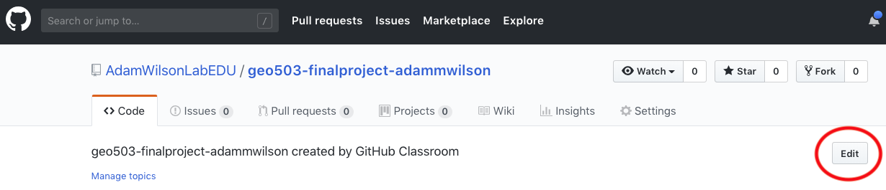

Create Final Project Webpage
Data I/O. RMarkdown to create dynamic research outputs. Publishing to github/word/html/etc
Reading
- Chapters 11, 26-30 in R4DS
- Browse website about RMarkdown
- Browse details about creating RMarkdown Websites
Tasks
- Create repository for final project
- Explore various options for your project website
- Push changes back to GitHub
- Enable website on GitHub
Overview
One convenient way to share research details is through a public website that includes all the information needed to reproduce the project. You will do this for your final project.
Today we will make a copy of a template for your final project, edit it, and ‘push’ it back up to your github account. You can check out the template code at https://github.com/AdamWilsonLabEDU/geo511_project and the template website at https://adamwilsonlabedu.github.io/geo511_project/
R Markdown
Cheatsheet:

Libraries
library(rmarkdown)
library(knitr)Create a copy of the project template.
Steps:
- Click on this
link to make a copy of the project template.
- Open your new repository in GitHub. It will look something like https://github.com/GEO511-2021/2021_project-adammwilson
- Click the green button “Clone or Download” and copy the URL.
Clone the project template to your computer
Now you will make a local copy on your computer by creating a new project and ‘cloning’ the repository you just forked.
- Open RStudio
- File -> New Project -> Version Control -> Git
- URL: paste from above. It will be similar to
https://adamwilsonlabedu.github.io/geo511_project/but with your username. - Project name: you can rename it if you want or keep the default.
- Project as subdirectory of
~/Documentsor wherever you want to put it.
- It should download the project to your computer then open it to the
index.Rmdfile.
Play with the project template
- Select the
Buildtab in the upper right corner of RStudio, then clickBuild Website - Check out the website settings in
_site.yml. These adjust the appearance, title, etc. - Check out
_navbar.yml. These settings define the menus, etc. If you only have one page you probably won’t need to adjust this information.
Push to GitHub and enable the website
- Select the
Gittab in the upper right and notice how it keeps track of any changes.
- To ‘commit’ the files (which is like saving them), check the files
you want to commit (or all of them) and click
commit. - Type in a brief message about the changes you made. Maybe something like “First update to my project materials”
- Click
Commit, thenclose. - Click
Pushto push it back up to GitHub.
- Now go to your repository website (similar to
https://adamwilsonlabedu.github.io/geo511_project/ - Publish your website
- Click settings in the upper right, then select the
Pagessection - Change “Source” to
gh-pages / (root) folderand click Save - Copy your new site’s URL to your clipboard
- Go back to the ‘Code’ tab for your project respository and find the line “No description, website, or topics provided” and click “Edit” on the right as shown in the following figure. 
- Paste the URL in the “Website” box. This will make it easier for others to find your website.
- Click settings in the upper right, then select the
- Go to your new project webpage. It can take ~5 minutes to appear after enabling.
- Now you can
commitand thenpushyour updates from RStudio and your website will be updated. If you get tired of entering your username and password every time, check out the instructions here.
GitHub actions
The template is set up to compile remotely using GitHub actions. This will make sure that your code is reproducible.
Explore markdown functions
- Use the Cheatsheet to add sections and some example narrative.
- Add more figures or different versions of a figure
- Check out the
kable()function for tables (e.g.kable(head(d)))
Abandoning the habit of secrecy in favor of process transparency and peer review was the crucial step by which alchemy became chemistry.Raymond, E. S., 2004, The art of UNIX programming: Addison-Wesley.